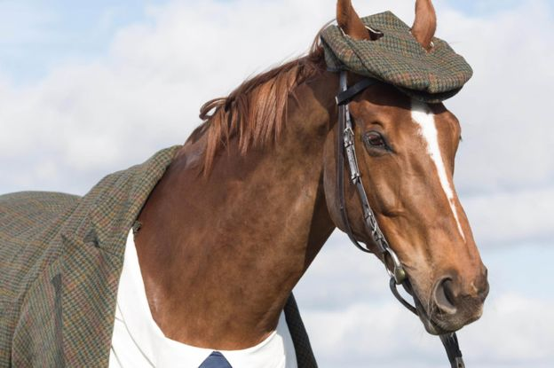

The horse (Equus ferus caballus)[2][3] is one of two extant subspecies of Equus ferus. It is an odd-toed ungulate mammal belonging to the taxonomic family Equidae. The horse has evolved over the past 45 to 55 million years from a small multi-toed creature, Eohippus, into the large, single-toed animal of today. Humans began to domesticate horses around 4000 BC, and their domestication is believed to have been widespread by 3000 BC. Horses in the subspecies caballus are domesticated, although some domesticated populations live in the wild as feral horses. These feral populations are not true wild horses, as this term is used to describe horses that have never been domesticated, such as the endangered Przewalski's horse, a separate subspecies, and the only remaining true wild horse. There is an extensive, specialized vocabulary used to describe equine-related concepts, covering everything from anatomy to life stages, size, colors, markings, breeds, locomotion, and behavior.
Horses' anatomy enables them to make use of speed to escape predators and they have a well-developed sense of balance and a strong fight-or-flight response. Related to this need to flee from predators in the wild is an unusual trait: horses are able to sleep both standing up and lying down. Female horses, called mares, carry their young for approximately 11 months, and a young horse, called a foal, can stand and run shortly following birth. Most domesticated horses begin training under saddle or in harness between the ages of two and four. They reach full adult development by age five, and have an average lifespan of between 25 and 30 years.

Horse breeds are loosely divided into three categories based on general temperament: spirited "hot bloods" with speed and endurance; "cold bloods", such as draft horses and some ponies, suitable for slow, heavy work; and "warmbloods", developed from crosses between hot bloods and cold bloods, often focusing on creating breeds for specific riding purposes, particularly in Europe. There are more than 300 breeds of horse in the world today, developed for many different uses.
Horses and humans interact in a wide variety of sport competitions and non-competitive recreational pursuits, as well as in working activities such as police work, agriculture, entertainment, and therapy. Horses were historically used in warfare, from which a wide variety of riding and driving techniques developed, using many different styles of equipment and methods of control. Many products are derived from horses, including meat, milk, hide, hair, bone, and pharmaceuticals extracted from the urine of pregnant mares. Humans provide domesticated horses with food, water and shelter, as well as attention from specialists such as veterinarians and farriers.
Historically, equestrians honed their skills through games and races. Equestrian sports provided entertainment for crowds and honed the excellent horsemanship that was needed in battle. Many sports, such as dressage, eventing and show jumping, have origins in military training, which were focused on control and balance of both horse and rider. Other sports, such as rodeo, developed from practical skills such as those needed on working ranches and stations. Sport hunting from horseback evolved from earlier practical hunting techniques.[175] Horse racing of all types evolved from impromptu competitions between riders or drivers. All forms of competition, requiring demanding and specialized skills from both horse and rider, resulted in the systematic development of specialized breeds and equipment for each sport. The popularity of equestrian sports through the centuries has resulted in the preservation of skills that would otherwise have disappeared after horses stopped being used in combat.[175]
Horses are trained to be ridden or driven in a variety of sporting competitions. Examples include show jumping, dressage, three-day eventing, competitive driving, endurance riding, gymkhana, rodeos, and fox hunting.[180] Horse shows, which have their origins in medieval European fairs, are held around the world. They host a huge range of classes, covering all of the mounted and harness disciplines, as well as "In-hand" classes where the horses are led, rather than ridden, to be evaluated on their conformation. The method of judging varies with the discipline, but winning usually depends on style and ability of both horse and rider.[181] Sports such as polo do not judge the horse itself, but rather use the horse as a partner for human competitors as a necessary part of the game. Although the horse requires specialized training to participate, the details of its performance are not judged, only the result of the rider's actions—be it getting a ball through a goal or some other task.[182] Examples of these sports of partnership between human and horse include jousting, in which the main goal is for one rider to unseat the other,[183] and buzkashi, a team game played throughout Central Asia, the aim being to capture a goat carcass while on horseback.[182]

Horse racing is an equestrian sport and major international industry, watched in almost every nation of the world. There are three types: "flat" racing; steeplechasing, i.e. racing over jumps; and harness racing, where horses trot or pace while pulling a driver in a small, light cart known as a sulky.[184] A major part of horse racing's economic importance lies in the gambling associated with it.[185]
There are certain jobs that horses do very well, and no technology has yet developed to fully replace them. For example, mounted police horses are still effective for certain types of patrol duties and crowd control.[186] Cattle ranches still require riders on horseback to round up cattle that are scattered across remote, rugged terrain.[187] Search and rescue organizations in some countries depend upon mounted teams to locate people, particularly hikers and children, and to provide disaster relief assistance.[188] Horses can also be used in areas where it is necessary to avoid vehicular disruption to delicate soil, such as nature reserves. They may also be the only form of transport allowed in wilderness areas. Horses are quieter than motorized vehicles. Law enforcement officers such as park rangers or game wardens may use horses for patrols, and horses or mules may also be used for clearing trails or other work in areas of rough terrain where vehicles are less effective.[189]
Although machinery has replaced horses in many parts of the world, an estimated 100 million horses, donkeys and mules are still used for agriculture and transportation in less developed areas. This number includes around 27 million working animals in Africa alone.[190] Some land management practices such as cultivating and logging can be efficiently performed with horses. In agriculture, less fossil fuel is used and increased environmental conservation occurs over time with the use of draft animals such as horses.[191][192] Logging with horses can result in reduced damage to soil structure and less damage to trees due to more selective logging.[193]
Modern horses are often used to reenact many of their historical work purposes. Horses are used, complete with equipment that is authentic or a meticulously recreated replica, in various live action historical reenactments of specific periods of history, especially recreations of famous battles.[194] Horses are also used to preserve cultural traditions and for ceremonial purposes. Countries such as the United Kingdom still use horse-drawn carriages to convey royalty and other VIPs to and from certain culturally significant events.[195] Public exhibitions are another example, such as the Budweiser Clydesdales, seen in parades and other public settings, a team of draft horses that pull a beer wagon similar to that used before the invention of the modern motorized truck.[196]

Horses are frequently seen in television, films and literature. They are sometimes featured as a major character in films about particular animals, but also used as visual elements that assure the accuracy of historical stories.[197] Both live horses and iconic images of horses are used in advertising to promote a variety of products.[198] The horse frequently appears in coats of arms in heraldry, in a variety of poses and equipment.[199] The mythologies of many cultures, including Greco-Roman, Hindu, Islamic, and Norse, include references to both normal horses and those with wings or additional limbs, and multiple myths also call upon the horse to draw the chariots of the Moon and Sun.[200] The horse also appears in the 12-year cycle of animals in the Chinese zodiac related to the Chinese calendar.[201]
People of all ages with physical and mental disabilities obtain beneficial results from association with horses. Therapeutic riding is used to mentally and physically stimulate disabled persons and help them improve their lives through improved balance and coordination, increased self-confidence, and a greater feeling of freedom and independence.[202] The benefits of equestrian activity for people with disabilities has also been recognized with the addition of equestrian events to the Paralympic Games and recognition of para-equestrian events by the International Federation for Equestrian Sports (FEI).[203] Hippotherapy and therapeutic horseback riding are names for different physical, occupational, and speech therapy treatment strategies that utilize equine movement. In hippotherapy, a therapist uses the horse's movement to improve their patient's cognitive, coordination, balance, and fine motor skills, whereas therapeutic horseback riding uses specific riding skills.[204]

Horses also provide psychological benefits to people whether they actually ride or not. "Equine-assisted" or "equine-facilitated" therapy is a form of experiential psychotherapy that uses horses as companion animals to assist people with mental illness, including anxiety disorders, psychotic disorders, mood disorders, behavioral difficulties, and those who are going through major life changes.[205] There are also experimental programs using horses in prison settings. Exposure to horses appears to improve the behavior of inmates and help reduce recidivism when they leave.[206]
A bloated dead horse on the ground in front of Napoleon and Poniatowski at the Battle of Leipzig, painted by January Suchodolski Horses have been used in warfare for most of recorded history. The first archaeological evidence of horses used in warfare dates to between 4000 and 3000 BC,[207] and the use of horses in warfare was widespread by the end of the Bronze Age.[208][209] Although mechanization has largely replaced the horse as a weapon of war, horses are still seen today in limited military uses, mostly for ceremonial purposes, or for reconnaissance and transport activities in areas of rough terrain where motorized vehicles are ineffective. Horses have been used in the 21st century by the Janjaweed militias in the War in Darfur.[210]
Horses are raw material for many products made by humans throughout history, including byproducts from the slaughter of horses as well as materials collected from living horses.
Products collected from living horses include mare's milk, used by people with large horse herds, such as the Mongols, who let it ferment to produce kumis.[211] Horse blood was once used as food by the Mongols and other nomadic tribes, who found it a convenient source of nutrition when traveling. Drinking their own horses' blood allowed the Mongols to ride for extended periods of time without stopping to eat.[211] The drug Premarin is a mixture of estrogens extracted from the urine of pregnant mares (pregnant mares' urine), and was previously a widely used drug for hormone replacement therapy.[212] The tail hair of horses can be used for making bows for string instruments such as the violin, viola, cello, and double bass.[213]

Horse meat has been used as food for humans and carnivorous animals throughout the ages. It is eaten in many parts of the world, though consumption is taboo in some cultures,[214] and a subject of political controversy in others.[215] Horsehide leather has been used for boots, gloves, jackets,[216] baseballs,[217] and baseball gloves. Horse hooves can also be used to produce animal glue.[218] Horse bones can be used to make implements.[219] Specifically, in Italian cuisine, the horse tibia is sharpened into a probe called a spinto, which is used to test the readiness of a (pig) ham as it cures.[220] In Asia, the saba is a horsehide vessel used in the production of kumis.[221]
A young man in US military clothing examines the teeth of a bay (dark brown) horse, while another person in military work clothing, partially obscured, holds the horse. Several other people are partially visible in the background. Checking teeth and other physical examinations are an important part of horse care. Horses are grazing animals, and their major source of nutrients is good-quality forage from hay or pasture.[222] They can consume approximately 2% to 2.5% of their body weight in dry feed each day. Therefore, a 450-kilogram (990 lb) adult horse could eat up to 11 kilograms (24 lb) of food.[223] Sometimes, concentrated feed such as grain is fed in addition to pasture or hay, especially when the animal is very active.[224] When grain is fed, equine nutritionists recommend that 50% or more of the animal's diet by weight should still be forage.[225]
Horses require a plentiful supply of clean water, a minimum of 10 US gallons (38 L) to 12 US gallons (45 L) per day.[226] Although horses are adapted to live outside, they require shelter from the wind and precipitation, which can range from a simple shed or shelter to an elaborate stable.[227]
Horses require routine hoof care from a farrier, as well as vaccinations to protect against various diseases, and dental examinations from a veterinarian or a specialized equine dentist.[228] If horses are kept inside in a barn, they require regular daily exercise for their physical health and mental well-being.[229] When turned outside, they require well-maintained, sturdy fences to be safely contained.[230] Regular grooming is also helpful to help the horse maintain good health of the hair coat and underlying skin.[231]